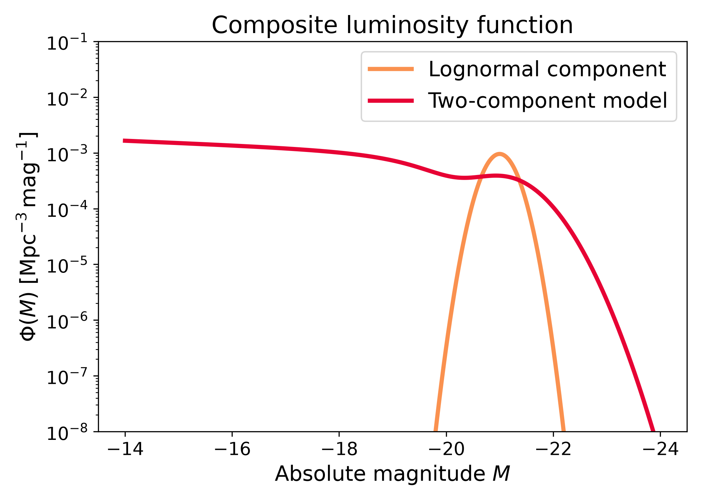
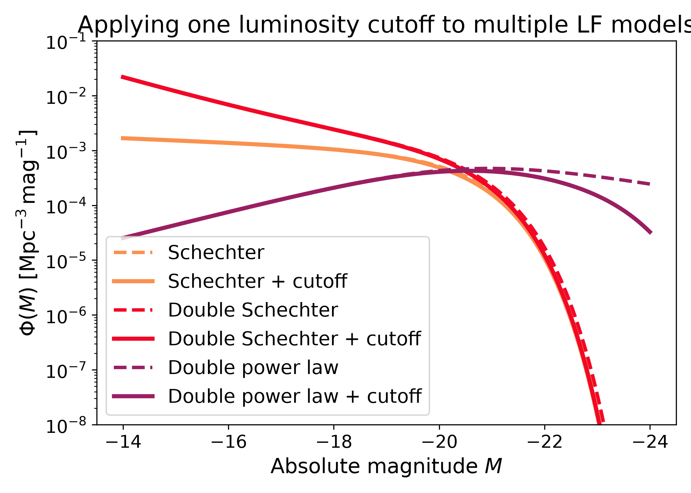

Composite models#
Composite models#
Composite models combine multiple luminosity function components. They are useful when a population is better described as a mixture rather than by one single analytic shape.
Two-component luminosity function#
The two-component model combines a lognormal component with a cutoff-modified Schechter component. The lognormal component describes a localized population, while the modified Schechter component contributes a broader luminosity function with a suppressed bright end.
import numpy as np
import matplotlib.pyplot as plt
import cmasher as cmr
from lfkit import LuminosityFunction
LABEL_SIZE = 15
TICK_SIZE = 13
TITLE_SIZE = 17
LEGEND_SIZE = 15
lognormal = LuminosityFunction.lognormal(
mean_absolute_mag=-21.0,
sigma_log_luminosity=0.10,
amplitude=6.0e-4,
)
composite = LuminosityFunction.two_component(
lognormal_mean_absolute_mag=-21.0,
lognormal_sigma_log_luminosity=0.25,
lognormal_amplitude=6.0e-4,
modified_phi_star=1.0e-3,
modified_alpha=-1.1,
modified_luminosity_fraction=0.562,
)
absolute_mag = np.linspace(-24.0, -14.0, 500)
colors = cmr.take_cmap_colors("cmr.guppy", 2, cmap_range=(0.0, 0.2))
fig, ax = plt.subplots(figsize=(7.0, 5.0))
ax.plot(
absolute_mag,
lognormal.phi(absolute_mag),
lw=3,
color=colors[0],
label="Lognormal component",
)
ax.plot(
absolute_mag,
composite.phi(absolute_mag),
lw=3,
color=colors[1],
label="Two-component model",
)
ax.set_yscale("log")
ax.set_ylim(1e-8, 1e-1)
ax.invert_xaxis()
ax.set_xlabel("Absolute magnitude $M$", fontsize=LABEL_SIZE)
ax.set_ylabel(
r"$\Phi(M)$ [$\mathrm{Mpc}^{-3}\,\mathrm{mag}^{-1}$]",
fontsize=LABEL_SIZE,
)
ax.set_title("Composite luminosity function", fontsize=TITLE_SIZE)
ax.tick_params(axis="both", labelsize=TICK_SIZE)
ax.legend(frameon=True, fontsize=LEGEND_SIZE, loc="best")
plt.tight_layout()
(png)
{kind=link}
{kind=link}

Luminosity cutoff modifier#
A luminosity cutoff can be applied to an existing luminosity function object.
This keeps the base model unchanged and returns a new object whose
lfkit.LuminosityFunction.phi() values are multiplied by a bright-end
cutoff.
import numpy as np
import matplotlib.pyplot as plt
import cmasher as cmr
from lfkit import LuminosityFunction
LABEL_SIZE = 15
TICK_SIZE = 13
TITLE_SIZE = 17
LEGEND_SIZE = 14
absolute_mag = np.linspace(-24.0, -14.0, 500)
models = {
"Schechter": LuminosityFunction.schechter(
phi_star=1.0e-3,
m_star=-20.5,
alpha=-1.1,
),
"Double Schechter": LuminosityFunction.double_schechter(
phi_star=1.0e-3,
m_star=-20.5,
alpha=-1.1,
beta=-0.6,
m_transition=-18.5,
),
"Double power law": LuminosityFunction.double_power_law(
phi_star=1.0e-3,
m_star=-20.5,
alpha=-1.4,
beta=-0.4,
),
}
colors = cmr.take_cmap_colors(
"cmr.guppy",
len(models),
cmap_range=(0.0, 0.35),
)
fig, ax = plt.subplots(figsize=(7.0, 5.0))
for (label, base), color in zip(models.items(), colors):
cutoff = base.with_luminosity_cutoff(
m_star=-20.5,
cutoff_power=1.0,
cutoff_amplitude=0.08,
)
ax.plot(
absolute_mag,
base.phi(absolute_mag),
lw=2.5,
ls="--",
color=color,
label=f"{label}",
)
ax.plot(
absolute_mag,
cutoff.phi(absolute_mag),
lw=3,
color=color,
label=f"{label} + cutoff",
)
ax.set_yscale("log")
ax.set_ylim(1e-8, 1e-1)
ax.invert_xaxis()
ax.set_xlabel("Absolute magnitude $M$", fontsize=LABEL_SIZE)
ax.set_ylabel(
r"$\Phi(M)$ [$\mathrm{Mpc}^{-3}\,\mathrm{mag}^{-1}$]",
fontsize=LABEL_SIZE,
)
ax.set_title("Applying one luminosity cutoff to multiple LF models", fontsize=TITLE_SIZE)
ax.tick_params(axis="both", labelsize=TICK_SIZE)
ax.legend(frameon=True, fontsize=LEGEND_SIZE, loc="best")
plt.tight_layout()
(png)
{kind=link}
{kind=link}
